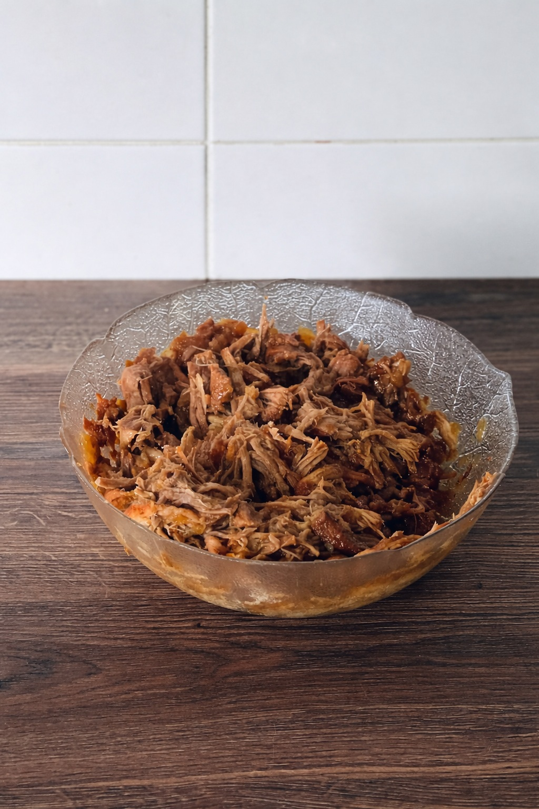

Pulled Pork
Coleslaw
Ingredients
- 1 white cabbage (~1.4 kg)
- 1 carrot
- 1 small onion
- 200 g mayonnaise
- 80 g heavy cream
- 2 tablespoons white wine vinegar
- 1 tablespoon lemon juice
- 4 tablespoons sugar
- Salt
- Black pepper
- Pork BBQ rub
Meat
Ingredients
- 1 large onion, finely chopped
- 2-3 cloves garlic, finely chopped
- 1 cup chicken broth
- 1/2 jar BBQ sauce
- A few tablespoons apple cider vinegar (if available)
Coleslaw
Instructions
- Cut the cabbage in half, remove the core, then slice it into thin strips.
- Grate the carrot directly into the sliced cabbage.
- Make the dressing by mixing the heavy cream, mayonnaise, vinegar, lemon juice, and sugar.
- Mix everything well and add salt and pepper to taste, until it tastes right.
- Add the dressing to the cabbage and carrot mixture and combine well.
- Cover with plastic wrap and place in the refrigerator.
Meat
Instructions
- Finely chop the onion and garlic.
- Mix with chicken broth, BBQ sauce, and apple cider vinegar.
- Cut 3-5 cm long slits into the meat on both sides.
- Rub the meat with the prepared mixture.
- Place in the oven at 100°C.
- Turn the meat every hour.